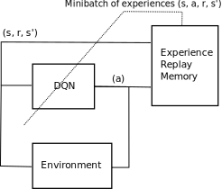
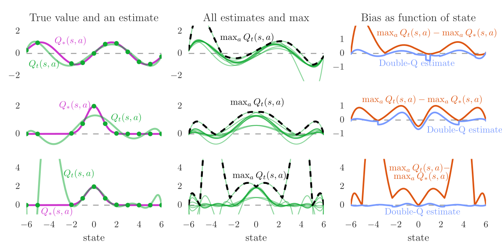
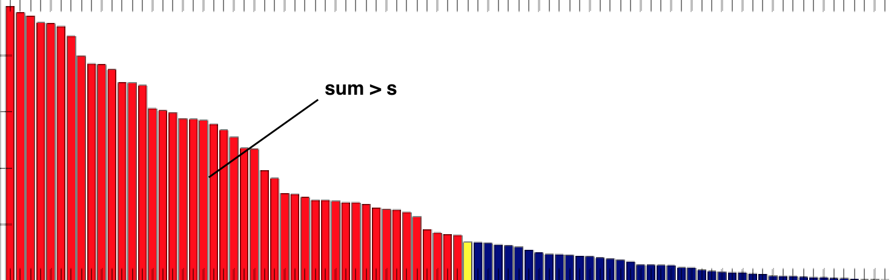
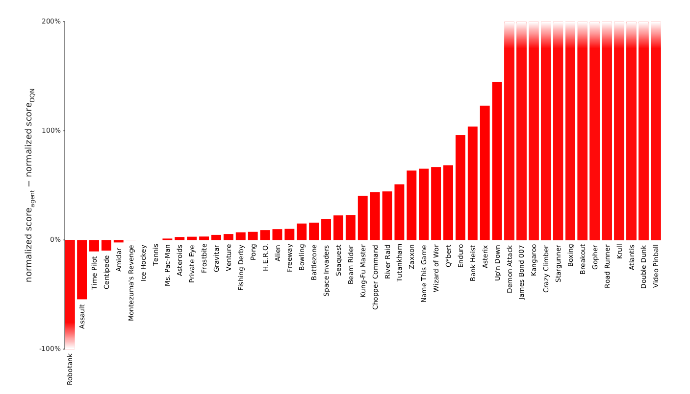
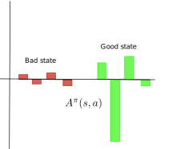

Deep Q-Learning (DQN)
Value-based deep RL
The basic idea in value-based deep RL is to approximate the Q-values in each possible state, using a deep neural network with free parameters \theta:
Q_\theta(s, a) \approx Q^\pi(s, a) = \mathbb{E}_\pi (R_t | s_t=s, a_t=a)
The Q-values now depend on the parameters \theta of the DNN. The derived policy \pi_\theta uses for example an \epsilon-greedy or softmax action selection scheme over the estimated Q-values:
\pi_\theta(s, a) \leftarrow \text{Softmax} (Q_\theta(s, a))
There are two possibilities to approximate Q-values Q_\theta(s, a):
- The DNN approximates the Q-value of a single (s, a) pair. The action space can be continuous.

- The DNN approximates the Q-value of all actions a in a state s. The action space must be discrete (one output neuron per action).

We could simply adapt Q-learning with FA to the DNN:
Initialize the deep neural network with parameters \theta.
Start from an initial state s_0.
for t \in [0, T_\text{total}]:
Select a_{t} using a softmax over the Q-values Q_\theta(s_t, a).
Take a_t, observe r_{t+1} and s_{t+1}.
Update the parameters \theta by minimizing the loss function:
\mathcal{L}(\theta) = (r_{t+1} + \gamma \, \max_{a'} Q_\theta(s_{t+1}, a') - Q_\theta(s_t, a_t))^2
This naive approach will not work: DNNs cannot learn from single examples (online learning = instability). DNNs require stochastic gradient descent (SGD):
\mathcal{L}(\theta) = E_\mathcal{D} (||\textbf{t} - \textbf{y}||^2) \approx \frac{1}{K} \sum_{i=1}^K ||\textbf{t}_i - \textbf{y}_i||^2
The loss function is estimated by sampling a minibatch of K i.i.d samples from the training set to compute the loss function and update the parameters \theta. This is necessary to avoid local minima of the loss function. Although Q-learning can learn from single transitions, it is not possible using DNN. Why not using the last K transitions to train the network? We could store them in a transition buffer and train the network on it.
Initialize the deep neural network with parameters \theta.
Initialize an empty transition buffer \mathcal{D} of size K: \{(s_k, a_k, r_k, s'_k)\}_{k=1}^K.
for t \in [0, T_\text{total}]:
Select a_{t} using a softmax over the Q-values Q_\theta(s_t, a).
Take a_t, observe r_{t+1} and s_{t+1}.
Store (s_t, a_t, r_{t+1}, s_{t+1}) in the transition buffer.
Every K steps:
- Update the parameters \theta using the transition buffer:
\mathcal{L}(\theta) = \frac{1}{K} \, \sum_{k=1}^K (r_k + \gamma \, \max_{a'} Q_\theta(s'_k, a') - Q_\theta(s_k, a_k))^2
- Empty the transition buffer.
Correlated inputs
Unfortunately, this does not work either. The last K transitions (s, a, r, s') are not i.i.d (independent and identically distributed). The transition (s_{t+1}, a_{t+1}, r_{t+2}, s_{t+2}) depends on (s_{t}, a_{t}, r_{t+1}, s_{t+1}) by definition, i.e. the transitions are correlated. Even worse, when playing video games, successive frames will be very similar or even identical.

The actions are also correlated: you move the paddle to the left for several successive steps.
Feeding transitions sequentially to a DNN is the same as giving all MNIST 0’s to a DNN, then all 1’s, etc… It does not work.

In SL, we have all the training data before training: it is possible to get i.i.d samples by shuffling the training set between two epochs. In RL, we create the “training set” (transitions) during training: the samples are not i.i.d as we act sequentially over time.
Non-stationary targets
In SL, the targets \mathbf{t} do not change over time: an image of a cat stays an image of a cat throughout learning.
\mathcal{L}(\theta) = \mathbb{E}_{\mathbf{x}, \mathbf{t} \sim \mathcal{D}} [||\mathbf{t} - F_\theta(\mathbf{x})||^2]
The problem is said stationary, as the distribution of the data does not change over time.
In RL, the targets t = r + \gamma \, \max_{a'} Q_\theta(s', a') do change over time:
Q_\theta(s', a') depends on \theta, so after one optimization step, all targets have changed!
As we improve the policy over training, we collect higher returns.
\mathcal{L}(\theta) = \mathbb{E}_{s, a \sim \pi_\theta} [(r + \gamma \, \max_{a'} Q_\theta(s', a') - Q_\theta(s, a))^2]
Neural networks do not like this at all. After a while, they give up and settle on a suboptimal policy.

Deep Q-network (DQN)
Non-linear approximators never really worked with RL before 2013 because of:
- The correlation between successive inputs or outputs.
- The non-stationarity of the problem.
These two problems are very bad for deep networks, which end up overfitting the learned episodes or not learning anything at all. Deepmind researchers (Mnih et al., 2013) proposed to use two classical ML tricks to overcome these problems:
- experience replay memory.
- target networks.
Experience replay memory
To avoid correlation between samples, (Mnih et al. 2015) proposed to store the (s, a, r, s') transitions in a huge experience replay memory or replay buffer \mathcal{D} (e.g. 1 million transitions).

When the buffer is full, we simply overwrite old transitions. The Q-learning update is only applied on a random minibatch of those past experiences, not the last transitions. This ensure the independence of the samples (non-correlated samples).
Initialize value network Q_{\theta}.
Initialize experience replay memory \mathcal{D} of maximal size N.
for t \in [0, T_\text{total}]:
Select an action a_t based on Q_\theta(s_t, a), observe s_{t+1} and r_{t+1}.
Store (s_t, a_t, r_{t+1}, s_{t+1}) in the experience replay memory.
Every T_\text{train} steps:
Sample a minibatch \mathcal{D}_s randomly from \mathcal{D}.
For each transition (s_k, a_k, r_k, s'_k) in the minibatch:
- Compute the target value t_k = r_k + \gamma \, \max_{a'} Q_{\theta}(s'_k, a')
Update the value network Q_{\theta} on \mathcal{D}_s to minimize:
\mathcal{L}(\theta) = \mathbb{E}_{\mathcal{D}_s}[(t_k - Q_\theta(s_k, a_k))^2]
But wait! The samples of the minibatch are still not i.i.d, as they are not identically distributed:
- Some samples were generated with a very old policy \pi_{\theta_0}.
- Some samples have been generated recently by the current policy \pi_\theta.
The samples of the minibatch do not come from the same distribution, so this should not work, except if you use an off-policy algorithm, such as Q-learning!
Q^\pi(s, a) = \mathbb{E}_{s_t \sim \rho_b, a_t \sim b}[ r_{t+1} + \gamma \, \max_a Q^\pi(s_{t+1}, a) | s_t = s, a_t=a]
In Q-learning, you can take samples from any behavior policy b, as long as the coverage assumption stands:
\pi(s,a) > 0 \Rightarrow b(s,a) > 0
Here, the behavior policy b is a kind of “superset” of all past policies \pi used to fill the ERM, so it “covers” the current policy.
b = \{\pi_{\theta_0}, \pi_{\theta_1}, \ldots, \pi_{\theta_t}\}
Samples from b are i.i.d, so Q-learning is going to work.
It is not possible to use an experience replay memory with on-policy algorithms.
Q^\pi(s, a) = \mathbb{E}_{s_t \sim \rho_\pi, a_t \sim \pi}[ r_{t+1} + \gamma \, Q^\pi(s_{t+1}, a_{t+1}) | s_t = s, a_t=a]
a_{t+1} \sim \pi_\theta would not be the same between \pi_{\theta_0} (which generated the sample) and \pi_{\theta_t} (the current policy).
Target network
The second problem when using DNN for RL is that the target is non-stationary, i.e. it changes over time: as the network becomes better, the Q-values have to increase.
In DQN, the target for the update is not computed from the current deep network \theta:
r + \gamma \, \max_{a'} Q_\theta(s', a')
but from a target network \theta´ updated only every few thousands of iterations.
r + \gamma \, \max_{a'} Q_{\theta'}(s', a')
\theta' is simply a copy of \theta from the past.

The DQN loss function becomes:
\mathcal{L}(\theta) = \mathbb{E}_\mathcal{D} [(r + \gamma \, \max_{a'} Q_{\theta'}(s', a')) - Q_\theta(s, a))^2]
This allows the target r + \gamma \, \max_{a'} Q_{\theta'}(s', a') to be stationary between two updates. It leaves time for the trained network to catch up with the targets.

The target network is updated by simply replacing the parameters \theta' with the current trained parameters \theta:
\theta' \leftarrow \theta
The value network \theta basically learns using an older version of itself…
DQN algorithm
Initialize value network Q_{\theta} and target network Q_{\theta'}.
Initialize experience replay memory \mathcal{D} of maximal size N.
for t \in [0, T_\text{total}]:
Select an action a_t based on Q_\theta(s_t, a), observe s_{t+1} and r_{t+1}.
Store (s_t, a_t, r_{t+1}, s_{t+1}) in the experience replay memory.
Every T_\text{train} steps:
Sample a minibatch \mathcal{D}_s randomly from \mathcal{D}.
For each transition (s_k, a_k, r_k, s'_k) in the minibatch:
- Compute the target value t_k = r_k + \gamma \, \max_{a'} Q_{\theta'}(s'_k, a') using the target network.
Update the value network Q_{\theta} on \mathcal{D}_s to minimize:
\mathcal{L}(\theta) = \mathbb{E}_{\mathcal{D}_s}[(t_k - Q_\theta(s_k, a_k))^2]
Every T_\text{target} steps:
- Update target network: \theta' \leftarrow \theta.
The deep network can be anything. Deep RL is only about defining the loss function adequately. For pixel-based problems (e.g. video games), convolutional neural networks (without max-pooling) are the weapon of choice.

Why no max-pooling? The goal of max-pooling is to get rid of the spatial information in the image. For object recognition, you do not care whether the object is in the center or on the side of the image. Max-pooling brings spatial invariance. In video games, you want to keep the spatial information: the optimal action depends on where the ball is relative to the paddle.
Are individual frames good representations of states? Using video frames as states breaks the Markov property: the speed and direction of the ball is a very relevant information for the task, but not contained in a single frame. This characterizes a Partially-observable Markov Decision Process (POMDP).
The simple solution retained in the original DQN paper is to stack the last four frames to form the state representation. Having the previous positions of the ball, the network can learn to infer its direction of movement.
- Creating the CNN in keras / tensorflow / pytorch is straightforward:
model = Sequential()
model.add(Input((4, 84, 84)))
model.add(Conv2D(16, (8, 8), strides=(4, 4)), activation='relu'))
model.add(Conv2D(32, (4, 4), strides=(2, 2), activation='relu'))
model.add(Flatten())
model.add(Dense(256, activation='relu'))
model.add(Dense(nb_actions, activation='linear'))
optimizer = RMSprop(lr=0.00025, rho=0.95, epsilon=0.01)
model.compile(optimizer, loss='mse')- Each step of the algorithm follows the GPI approach:
def q_iteration(env, model, state, memory):
# Choose the action with epsilon-greedy
if np.random.random() < epsilon:
action = env.action_space.sample()
else:
# Predict the Q-values for the current state and take the greedy action
values = model.predict([state])[0]
action = values.argmax()
# Play one game iteration
new_state, reward, done, _ = env.step(action)
# Append the transition to the replay buffer
memory.add(state, action, new_state, reward, done)
# Sample a minibatch from the memory and fit the DQN
s, a, r, s_, d = memory.sample_batch(32)
fit_batch(model, s, a, r, s_, d)- The only slight difficulty is actually to compute the targets for learning:
def fit_batch(model, states, actions, rewards, next_states, dones)
# Predict the Q-values in the current state
Q_values = model.predict(states)
# Predict the Q-values in the next state using the target model
next_Q_value = target_model.predict(next_states).max(axis=1)
# Terminal states have a value of 0
next_Q_value[dones] = 0.0
# Compute the target
targets = Q_values.copy()
for i in range(batch_size):
targets[i, actions[i]] = rewards[i] + self.gamma * next_Q_value[i]
# Train the model on the minibatch
self.model.fit(states, targets, epochs=1, batch_size=batch_size, verbose=0)DQN results
DQN was trained using 50M frames (38 days of game experience) per game. Replay buffer of 1M frames. Action selection: \epsilon-greedy with \epsilon = 0.1 and annealing. Optimizer: RMSprop with a batch size of 32.
The DQN network was trained to solve 49 different Atari 2600 games with the same architecture and hyperparameters. In most of the games, the network reaches super-human performance. Some games are still badly performed (e.g. Montezuma’s revenge), as they require long-term planning. It was the first RL algorithm able to learn different tasks (no free lunch theorem). The 2015 paper in Nature started the hype for deep RL.

 ## DQN variants
## DQN variants
Double DQN
Q-learning methods, including DQN, tend to overestimate Q-values, especially for the non-greedy actions:
Q_\theta(s, a) > Q^\pi(s, a)
This does not matter much in action selection, as we apply \epsilon-greedy or softmax on the Q-values anyway, but it may make learning slower (sample complexity) and less optimal.

To avoid optimistic estimations, the target is computed by both the value network \theta and the target network \theta':
- Action selection: The next greedy action a^* is calculated by the value network \theta (current policy):
a^* =\text{argmax}_{a'} Q_{\theta}(s', a')
- Action evaluation: Its Q-value for the target is calculated using the target network \theta' (older values):
t = r + \gamma \, Q_{\theta'}(s´, a^*)
This gives the following loss function for double DQN (DDQN, (van Hasselt et al., 2015)):
\mathcal{L}(\theta) = \mathbb{E}_\mathcal{D} [(r + \gamma \, Q_{\theta'}(s´, \text{argmax}_{a'} Q_{\theta}(s', a')) - Q_\theta(s, a))^2]
Prioritized Experience Replay
The experience replay memory or replay buffer is used to store the last 1M or so transitions (s, a, r, s'). The learning algorithm uniformly samples a minibatch of size K to update its parameters.
Not all transitions are interesting:
- Some transitions were generated by a very old policy, the current policy won’t take them anymore.
- Some transitions are already well predicted: the TD error is small, there is nothing to learn from.
\delta_t = r_{t+1} + \gamma \, \max_{a'} Q_\theta(s_{t+1}, a_{t+1}) - Q_\theta(s_t, a_t) \approx 0
The experience replay memory makes learning very slow, as we need a lot of samples to learn something useful: high sample complexity. We need a smart mechanism to preferentially pick the transitions that will boost learning the most, without introducing a bias.
Prioritized sweeping is actually a quite old idea (Moore and Atkeson, 1993). The idea of prioritized experience replay (PER, (Schaul et al., 2015)) is to sample in priority those transitions whose TD error is the highest:
\delta_t = r_{t+1} + \gamma \, \max_{a'} Q_\theta(s_{t+1}, a_{t+1}) - Q_\theta(s_t, a_t)
In practice, we insert the transition (s, a, r, s', \delta) into the replay buffer. To create a minibatch, the sampling algorithm select a transition k based on the probability:
P(k) = \frac{(|\delta_k| + \epsilon)^\alpha}{\sum_k (|\delta_k| + \epsilon)^\alpha}
\epsilon is a small parameter ensuring that transition with no TD error still get sampled from time to time. \alpha allows to change the behavior from uniform sampling (\alpha=0, as in DQN) to fully prioritized sampling (\alpha=1). \alpha should be annealed from 0 to 1 during training. Think of it as a “kind of” softmax over the TD errors. After the samples have been used for learning, their TD error \delta is updated in the PER.
The main drawback is that inserting and sampling can be computationally expensive is we simply sort the transitions based on (|\delta_k| + \epsilon)^\alpha:
- Insertion: \mathcal{O}(N \, \log N).
- Sampling: \mathcal{O}(N).

Using binary sumtrees instead of a linear queue, prioritized experience replay can be made efficient in both insertion (\mathcal{O}(\log N)) and sampling (\mathcal{O}(1)).



Dueling networks
DQN and its variants learn to predict directly the Q-value of each available action.

There are several problems with predicting Q-values with a DNN:
- The Q-values can take high values, especially with different values of \gamma.
- The Q-values have a high variance, between the minimum and maximum returns obtained during training.
- For a transition (s_t, a_t, s_{t+1}), a single Q-value is updated, not all actions in s_t.

The exact Q-values of all actions are not equally important.
- In bad states (low V^\pi(s)), you can do whatever you want, you will lose.
- In neutral states, you can do whatever you want, nothing happens.
- In good states (high V^\pi(s)), you need to select the right action to get rewards, otherwise you lose.
An important notion is the advantage A^\pi(s, a) of an action:
A^\pi(s, a) = Q^\pi(s, a) - V^\pi(s)
It tells how much return can be expected by taking the action a in the state s, compared to what is usually obtained in s with the current policy. If a policy \pi is deterministic and always selects a^* in s, we have:
A^\pi(s, a^*) = 0 A^\pi(s, a \neq a^*) < 0
This is particularly true for the optimal policy. But if we have separate estimates V_\varphi(s) and Q_\theta(s, a), some actions may have a positive advantage. Advantages have less variance than Q-values.

In dueling networks (Wang et al., 2016), the network is forced to decompose the estimated Q-value Q_\theta(s, a) into a state value V_\alpha(s) and an advantage function A_\beta(s, a):
Q_\theta(s, a) = V_\alpha(s) + A_\beta(s, a)

The parameters \alpha and \beta are just two shared subparts of the NN \theta. The loss function
\mathcal{L}(\theta) = \mathbb{E}_\mathcal{D} [(r + \gamma \, Q_{\theta'}(s´, \text{argmax}_{a'} Q_{\theta}(s', a')) - Q_\theta(s, a))^2]
is exactly the same as in (D)DQN: only the internal structure of the NN changes.
The Q-values are the sum of two functions:
Q_\theta(s, a) = V_\alpha(s) + A_\beta(s, a)
However, this sum is unidentifiable:
\begin{aligned} Q_\theta(s, a) = 10 & = 1 + 9 \\ & = 2 + 8 \\ & = 3 + 7 \\ \end{aligned}
To constrain the sum, (Wang et al. 2016) propose that the greedy action w.r.t the advantages should have an advantage of 0:
Q_\theta(s, a) = V_\alpha(s) + (A_\beta(s, a) - \max_{a'} A_\beta(s, a'))
This way, there is only one solution to the addition. The operation is differentiable, so backpropagation will work. (Wang et al. 2016) show that subtracting the mean advantage works better in practice:
Q_\theta(s, a) = V_\alpha(s) + (A_\beta(s, a) - \frac{1}{|\mathcal{A}|} \, \sum_{a'} A_\beta(s, a'))

DQN and its early variants (double duelling DQN with PER) are an example of value-based deep RL. The value Q_\theta(s, a) of each possible action in a given state is approximated by a convolutional neural network. The NN has to minimize the mse between the predicted Q-values and the target value corresponding to the Bellman equation:
\mathcal{L}(\theta) = \mathbb{E}_\mathcal{D} [(r + \gamma \, Q_{\theta'}(s´, \text{argmax}_{a'} Q_{\theta}(s', a')) - Q_\theta(s, a))^2]
The use of an experience replay memory and of target networks allows to stabilize learning and avoid suboptimal policies. The main drawback of DQN is sample complexity: it needs huge amounts of experienced transitions to find a correct policy. The sample complexity come from the deep network itself (gradient descent is iterative and slow), but also from the ERM: it contains 1M transitions, most of which are outdated. Value-based algorithms only work for small and discrete action spaces (one output neuron per action).